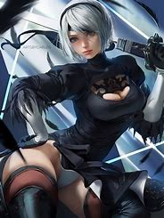

About 2B
2B is a female android protagonist in the action role-playing game NieR:Automata, developed by PlatinumGames and published by Square Enix.
Appearance
2B has short black hair, pale skin, and gray eyes. She wears a black dress with a skirt that has a split up the side, black thigh-high stockings, and black heeled boots. She also wears a black visor that covers her eyes.
Personality
2B is a serious and stoic character, but she is also shown to have a softer side and a sense of duty to her mission. She is deeply conflicted by the moral dilemmas she faces as an android soldier.
Abilities
2B is a highly skilled fighter, wielding a variety of weapons including swords, spears, and combat bracers. She is also adept at hacking and using ranged attacks.